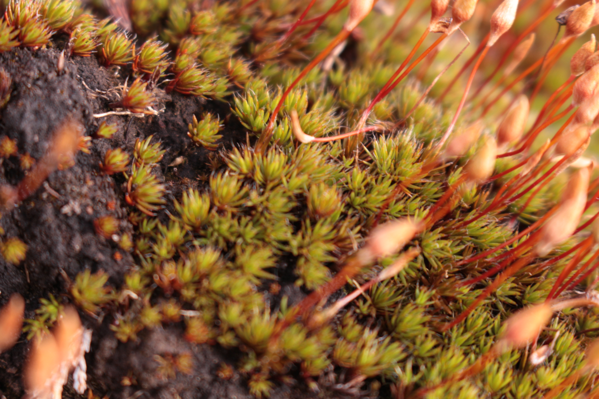
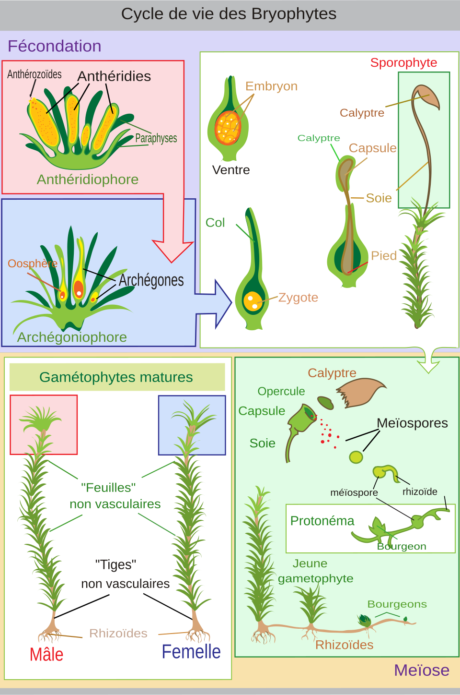
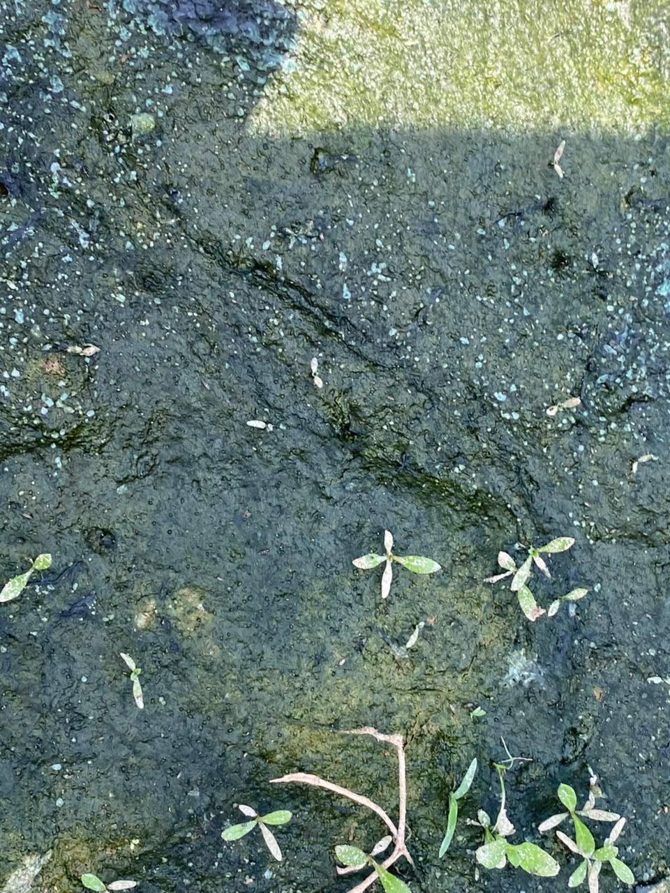

Mousses
>, envrion 470 Ma ° Ordovicien
Le problème que ce groupe a resolu
Se déssecher:La sortie de l'eau demande une protection. Les mousses apportent la cuticule cireuse et les stomates.
Appareil végétatif

La mousse a des rhizoides(pas de vraies) et pas de vraies vaisseaux. Ce que l'on voit est le gamétophyte, la plante verte.
Reproduction

Dissémination par spore. Le gamète mâle nage encore jusqu'à l'ovule: il faut de l'humidité.
Observé sur le terrain
